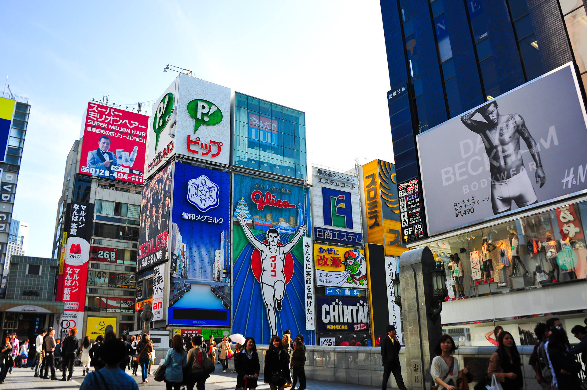

道頓堀是一條位於日本大阪府大阪市的運河，以鄰近的戲院、商業及娛樂場所聞名。道頓堀與木津川及東橫堀川連接，全長約2.9公里，其名字亦成為大阪市中央區一個町的名稱。
今日的道頓堀是大阪的一個主要商業區域，沿運河兩岸設有商店街及不少飲食店。河畔的大型霓虹廣告牌，也成為大阪的著名標誌，而蟹道樂（かに道楽）總店及門外長30呎的大型蟹模型是道頓堀另一著名地標。
道頓堀上的固力果霓虹廣告堪稱世界最有名戶外廣告板，早於1935年設立。廣告板分別於1955年、1963年、1972年、1996年、1998年及2014年進行更換。在2002年韓日世界盃舉行期間，曾被換成日本國家足球隊的球衣，為日本打氣。2011年3月，日本東北大地震發生後，廣告旁貼上勉勵的布條。2014年10月第6代的廣告板轉用14萬枚LED燈，背景可不斷轉動。
We’ve crafted some handsome templates for you to use. Go ahead and click 'Continue to layouts' to browse through them. You can easily go back to edit your page before publishing. After publishing your page, you can revisit the page generator and switch to another theme. Your Page content will be preserved.
If you prefer to not use the automatic generator, push a branch named gh-pages to your repository to create a page manually. In addition to supporting regular HTML content, GitHub Pages support Jekyll, a simple, blog aware static site generator. Jekyll makes it easy to create site-wide headers and footers without having to copy them across every page. It also offers intelligent blog support and other advanced templating features.
You can @mention a GitHub username to generate a link to their profile. The resulting <a> element will link to the contributor’s GitHub Profile. For example: In 2007, Chris Wanstrath (@defunkt), PJ Hyett (@pjhyett), and Tom Preston-Werner (@mojombo) founded GitHub.
Having trouble with Pages? Check out our documentation or contact support and we’ll help you sort it out.
Having trouble with Pages? Check out our documentation or contact support and we’ll help you sort it out.